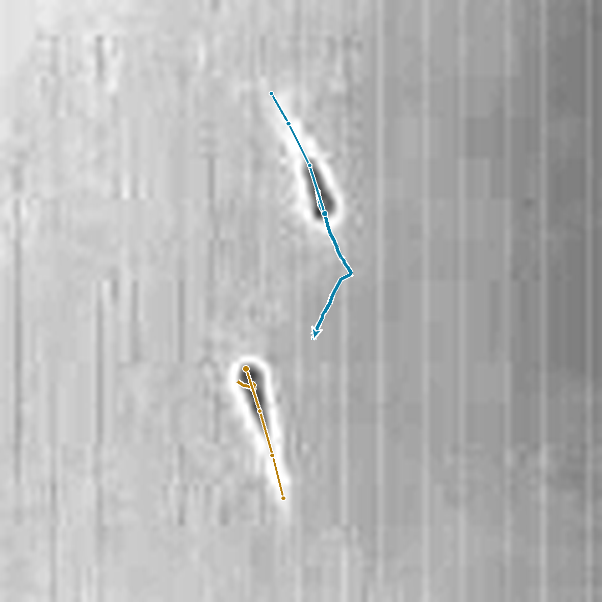
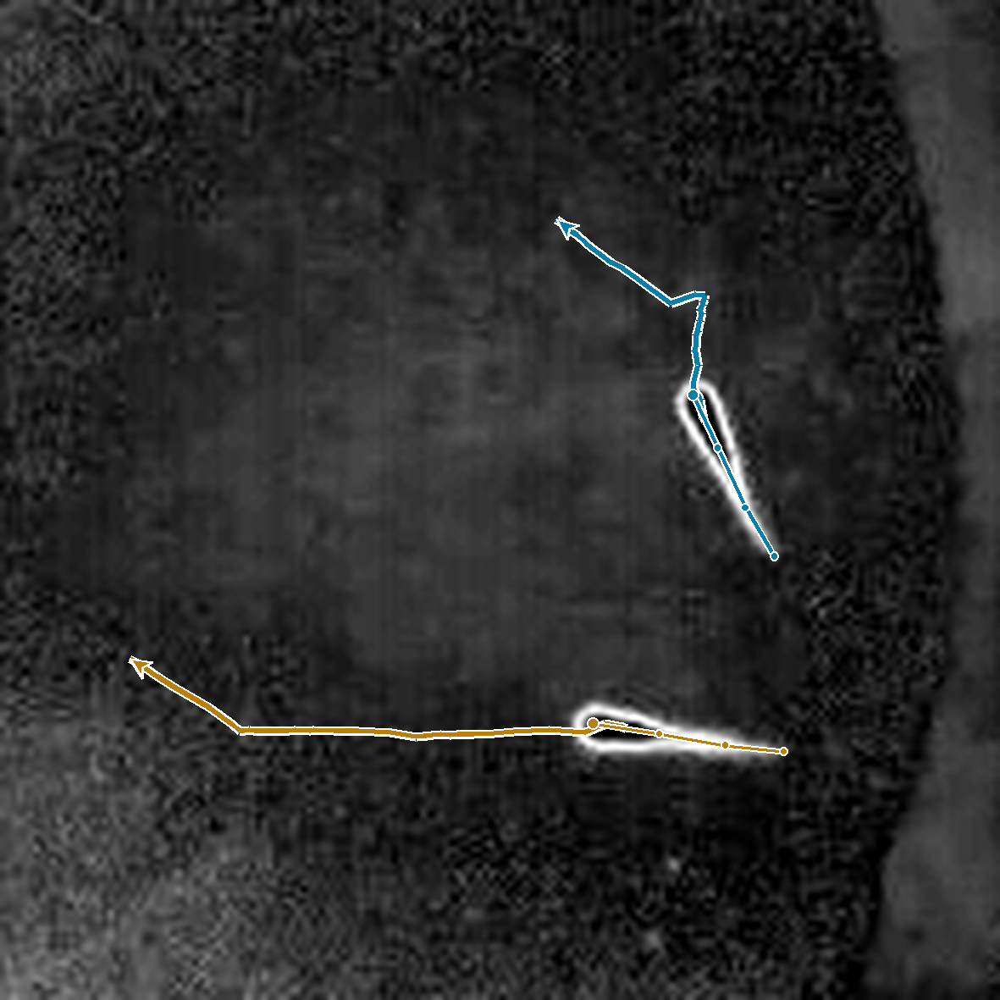
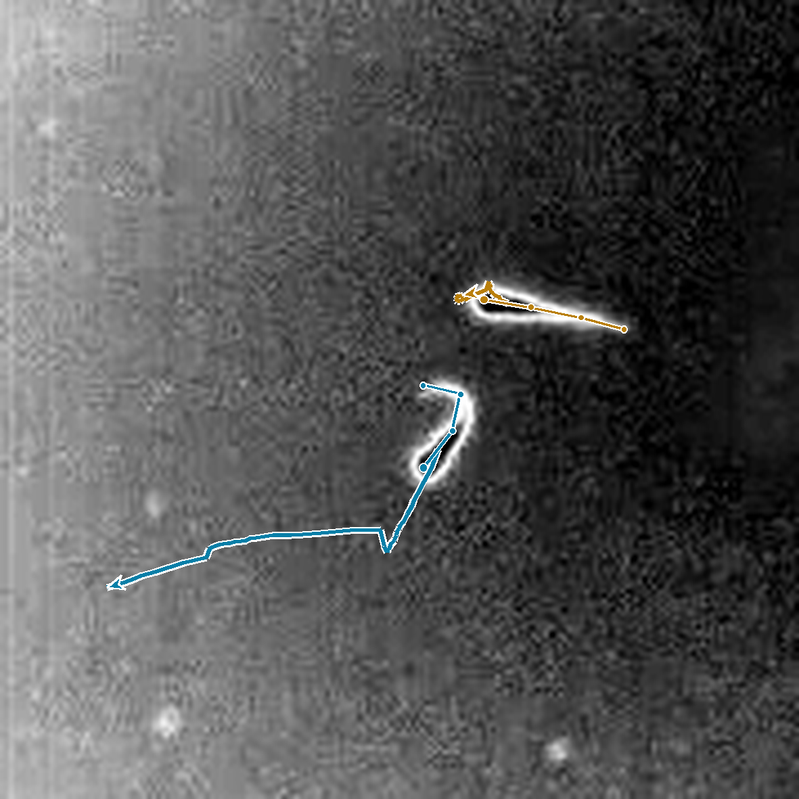
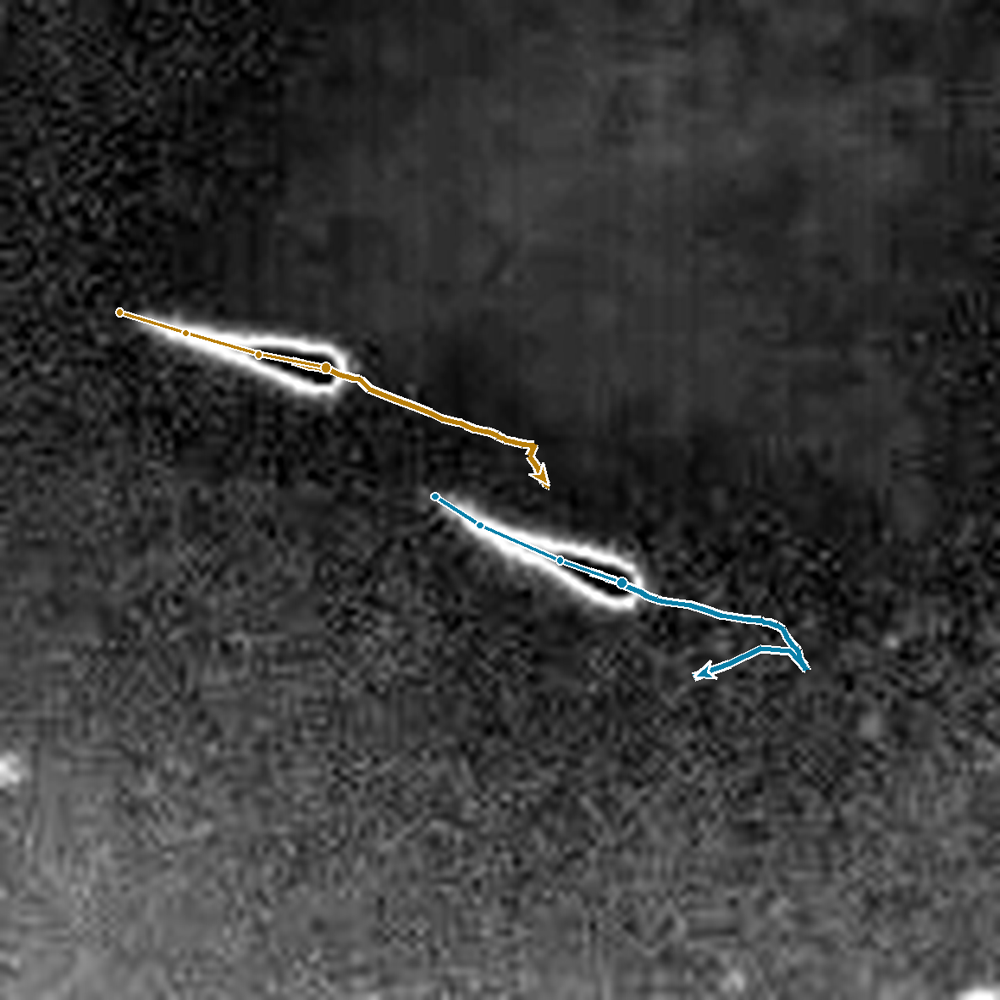

FMR1 zebrafish poster
Supplementary videos - Marco Salamanca
Closed-loop visuomotor adaptation
A head-fixed larva swims in a virtual environment. The video compares recorded bouts before and after visual-feedback gain decreases from 1 to 0.33. Tail tracking is overlaid on the original camera images.
Playback:
Social interactions
Four representative interactions at 28 dpf, shown separately with observed head-to-tail tracking. The still images include observed future paths. Social clips start at 0.5× playback speed.
Approach
One fish approaches a nearly stationary partner.

Mutual withdrawal
The fish approach one another, then both move away.

Avoidance
The yellow fish approaches, followed by withdrawal of the blue fish.

Following
One fish follows its partner in the same direction.
